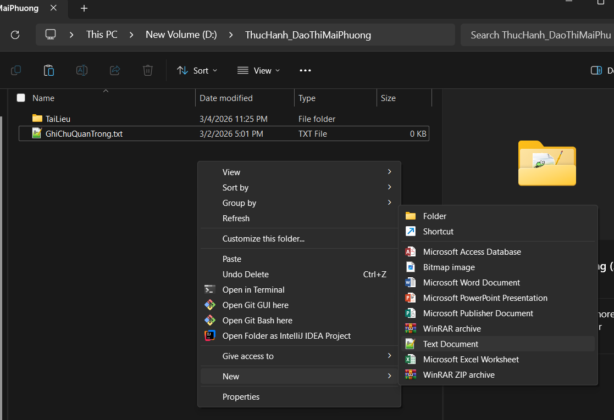
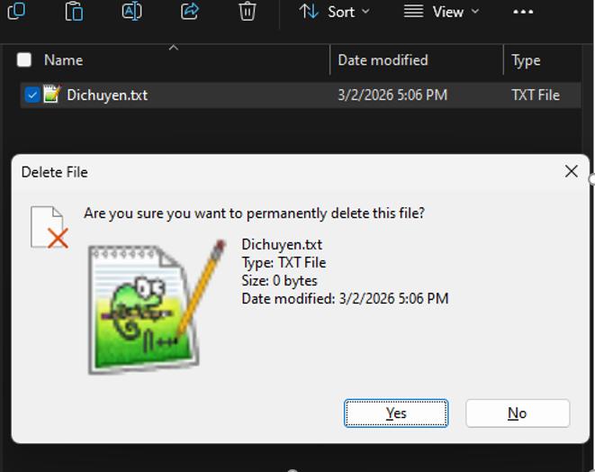

Bài 01 / Hồ sơ học tập
Bài 1: Máy tính và các thiết bị ngoại vi
Thực hành tạo, đổi tên, sao chép, di chuyển, xóa và khôi phục tệp trong cấu trúc thư mục cá nhân.
Đào Thị Mai PhươngKỹ năng số nền tảngTrình quản lý tệp12 bước thực hành
Mục tiêu thực hành
Bài thực hành rèn luyện các thao tác quản lý tệp và thư mục cơ bản trên Windows. Cấu trúc làm việc được tạo tại ổ D: với thư mục chính ThucHanh_DaoThiMaiPhuong, thư mục con TaiLieu và các tệp văn bản dùng để thao tác.
Quy trình thực hiện
- Mở Trình quản lý tệp, truy cập ổ New Volume (D:) và tạo thư mục ThucHanh_DaoThiMaiPhuong.
- Tạo GhiChu.txt, sau đó đổi tên thành GhiChuQuanTrong.txt.
- Tạo thư mục con TaiLieu; sao chép GhiChuQuanTrong.txt vào thư mục này.
- Tạo DiChuyen.txt, dùng lệnh Cắt và Dán để di chuyển vào TaiLieu.
- Xóa GhiChuQuanTrong.txt vào Thùng rác; xóa vĩnh viễn DiChuyen.txt bằng Shift + Delete.
- Mở Thùng rác và khôi phục GhiChuQuanTrong.txt về vị trí ban đầu.
Phân biệt: Sao chép giữ lại tệp gốc, Cắt chuyển tệp khỏi vị trí cũ; Xóa có thể khôi phục từ Thùng rác, còn Shift + Delete bỏ qua thùng rác.
Minh chứng thao tác


Kết quả
Hoàn thành chuỗi 12 bước từ tạo cấu trúc lưu trữ đến khôi phục tệp. Bài thực hành giúp phân biệt rõ sao chép, di chuyển, xóa thông thường và xóa vĩnh viễn.
Bản PDF: Báo cáo đầy đủ của Bài 1.
Mở PDF báo cáo